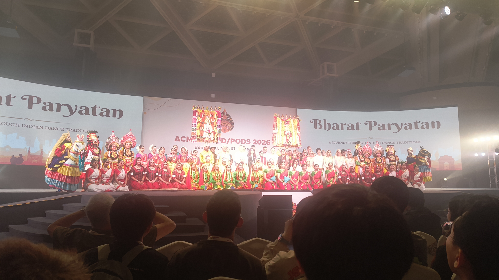
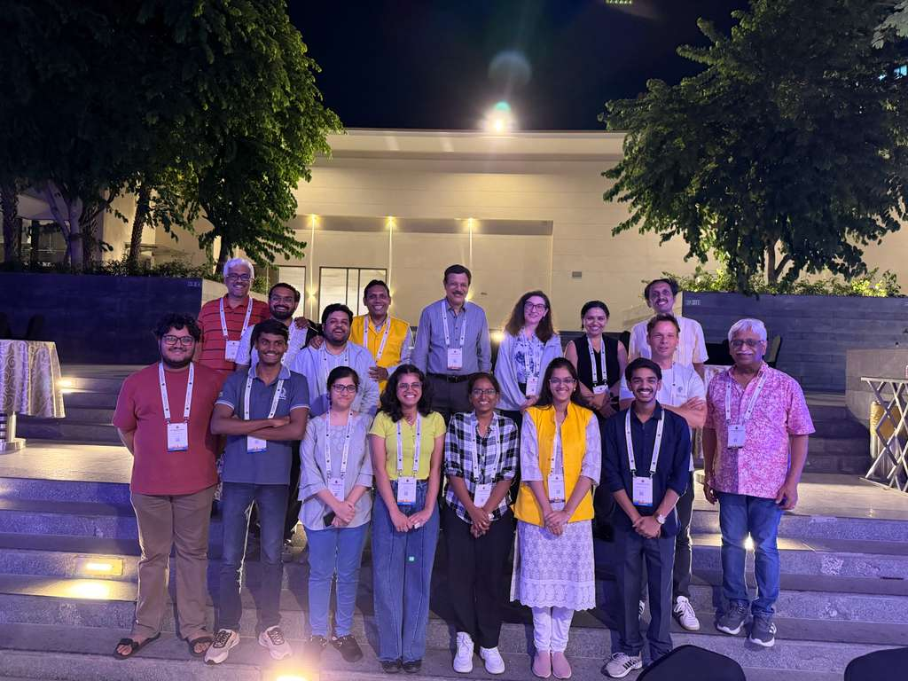

For the duration of the conference, we stayed at a hostel provided by the MVJ College of Engineering. On the afternoon of May 29th, my friends from the Database Systems Lab (DSL) at IISc Bangalore and I made the two-hour journey to MVJ. To our dismay, a heavy downpour welcomed us upon arrival. While the hostel accommodations were simple, they served their purpose well. Being the first group of student volunteers to arrive, we enjoyed a quiet dinner at the college mess before turning in for the night.
Pre-conference session
Our day began at 8:30 AM as we headed to the BMS College of Engineering. As a lead volunteer—and the only one in our group fluent in Kannada—I took charge of coordinating logistics with the bus drivers to ensure everyone stayed on schedule.
After navigating Bangalore's notorious traffic, we arrived at BMS at 10:00 AM. We attended the opening talks by the conference general chairs, Profs. Jayant Haritsa and S. Sudarshan, followed by an insightful session by Prasad Deshpande from Databricks. After a brief intermission, Pavan Deolasee from EDB delivered an engaging talk.

An industry panel discussion was scheduled after lunch, but we had to depart early for the Sheraton Grand Bangalore—the main conference venue. The commute was another two-hour journey, and we also needed to coordinate pickups for fellow volunteers who had arrived at MVJ later that morning.

Upon arriving at the Sheraton Grand, the organizing committee briefed us on our upcoming duties over dinner. Although preparations were actively underway, seeing the main stage still under construction raised a few anxious whispers about whether everything would be ready in time.

The Workshops!
Day 1 marked the start of the workshops. To reach the Sheraton Grand on time, we planned to depart MVJ by 7:30 AM. Although a delay in breakfast at the hostel set us back slightly, we arrived at the venue with plenty of time to spare before the sessions began.
I started my schedule with the Q-Data workshop on quantum databases, where Manish Kesarwani from IBM Research presented his work on "Quantum Index Advisors."
Next were several compelling presentations from various speakers, including Prof. Ahana Pradhan. The afternoon sessions culminated in a highly engaging plenary panel discussion on Vector Search, featuring a distinguished panel of experts:
- Ravishankar Krishnaswamy (Microsoft Research India)
- Alexandra Meliou (UMass Amherst)
- Yannis Papakonstantinou (Google)
- Yufei Tao (Chinese University of HK)
- David P. Woodruff (CMU)

The panel concluded with a lively Q&A session, followed by a networking dinner that wrapped up our first full day of the conference.
PODS and DaMoN
We began the day with an introductory session by the general chairs, Profs. Jayant Haritsa and S. Sudarshan. The academic schedule featured a keynote by Prof. Jan Van den Bussche of Hasselt University, followed by a collaborative talk by Nicolas Bruno and Matteo Interlandi of Microsoft Research.
The day concluded with the New Researcher Symposium, which featured a panel discussion on career strategies for early-career academics. To top off the session, the organizers hosted a database trivia Kahoot quiz—which I won! I was thrilled to walk away with a bag of fine Italian chocolates as the grand prize.
The Main Conference
Day 3 kicked off with opening remarks from the organizing committee, followed by a full lineup of main conference research sessions.

The technical sessions concluded around 6:30 PM, after which we traveled to the Taj Vivanta in Whitefield for a dinner hosted by IBM. This event was a major highlight, as I had the honor of speaking with Prof. C. Mohan and hearing some of his fascinating perspectives on database history.

The night ended with a bit of an adventure. After dinner, we discovered that our shuttle bus had already departed. Although we could have easily booked cabs, the group decided on a whim to walk back to the hostel—a lively, albeit tiring, four-kilometer trek under the night sky.
The Main Conference
Day 4 brought more technical sessions and introduced me to a charming tradition unique to the database research community. While standard conferences often ring a bell to signal the end of coffee breaks, the database community summons attendees back using a trumpet—a tradition originally initiated by Profs. Miron Livny and Joe Hellerstein. This year, Prof. Carsten Binnig took on the role of the trumpeter, sounding the call to session with great energy.

The day culminated in a spectacular cultural program titled "Bharat Paryatana" (Journey through India). We were treated to a vibrant showcase of traditional folk dances from different regions of the country, followed by a grand banquet dinner.

Keynotes & Traditions
Day 5 began with an outstanding plenary keynote by Prof. Gustavo Alonso of ETH Zurich, followed by a comprehensive tutorial on Quantum Databases. The tutorial was co-presented by Manish Kesarwani and Prof. Jayant Haritsa. Amusingly, the dynamic between them reminded me of the "Topics in Database Systems" class I took under Prof. Jayant at IISc, where students present while the professor provides real-time commentary and critiques.

Following lunch, Prof. Jayant delivered an inspiring plenary talk exploring the landscape and evolution of database research in India.

The highlight of the day was a traditional South Indian meal served on classic banana leaves. It was wonderful to see many of the distinguished attendees and professors embracing the theme by dressing in traditional Indian attire (dhoti/kurta):

The Conference Closes!
The final day featured the concluding workshop sessions, after which the conference officially drew to a close. We gathered for an intimate farewell dinner with only the organizing committee and student volunteers. It was a relaxed and meaningful way to celebrate the success of the conference and reflect on our shared hard work.

Following the dinner, we departed from the Sheraton Grand at around 8:00 PM. I coordinated with our bus driver for the final trip, picking up our luggage from the hostel, and heading back home. We finally arrived back at IISc by 11:00 PM, concluding an unforgettable week of database research and volunteering.